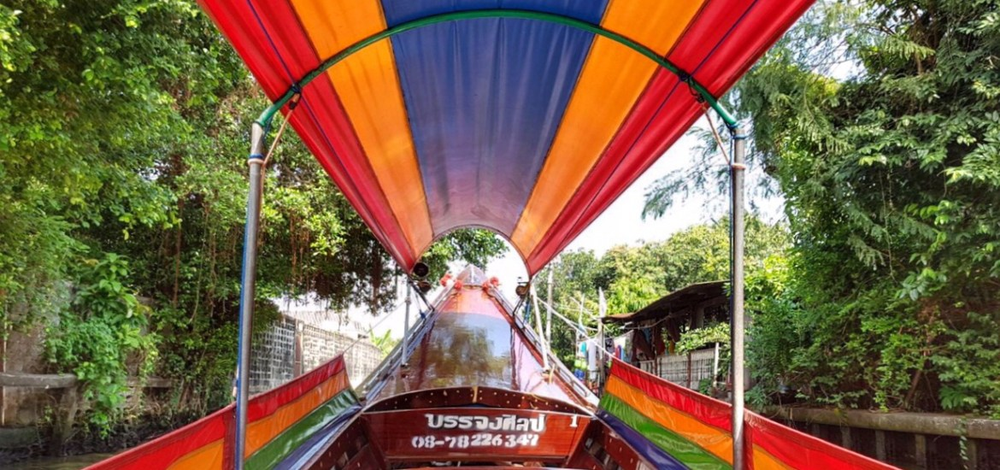

Riflessioni Notturne
All’alba del 4° giorno il mio corpo (e il mio stomaco che brontola malgrado il buonissimo sushi mangiato a cena) non si è ancora abituato al cambio di orario. Sono le 6 a.m. ora locale e, mentre Carlo se la ronfa senza pudore, sto cercando di memorizzare qualche parola in thailandese